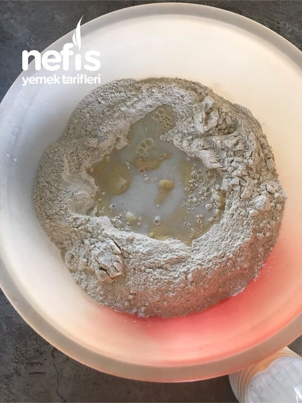

🍽️ 12-14 kişilik⏱️ Hazırlık: 5 sa🔥 Pişirme: 15 dk🏷️ Diğer Tarifler🏷️ Kış Hazırlıkları
Malzemeler
- 20 kg un
- 10 lt süt
- 70 yumurta
- 2 kg ince irmik
- 20 kaşık tuz
Hazırlanışı
- İki leğende malzemelerin yarısını kullanarak ayrı ayrı yoğurdum.
- 10 kg unun ortasına irmiği döktüm.
- Üzerine biraz hafif ılık süt döktüm irmik biraz yumuşasın diye.
- Bu arada yumurtaları kırıp çırpıyoruz.
- Çırpılmış yumurtaları, 10 kaşık tuzu ve sütü ilave ederek hamurumuzu hazırlıyoruz.
- İyice yoğurulan hamuru bezelere ayırıp yuvarlıyoruz.
- Hamur leğenimize birbirine yapışmayacak şekilde diziyoruz.
- Islatıp iyice suyunu sıktığımız sofra bezini bezelerin üzerine koyuyoruz.
- Diğer bezeleri de sofra bezinin ara katlarına koyuyoruz.
- İkinci hamuru da yoğurduktan sonra ilk hamurun dinlenmiş hamurlarını açmaya başlıyoruz.
- Güneş görmeyen teras veya balkona yufkaları seriyoruz.
- Kıvama geldiğinde 3-4 yufkayı üst üste koyarak önce dörde bölüyoruz.
- Sonra şeritler halinde kesip şekil veriyoruz.
- Erişte veya üçgen veya kare vs. Şekiller verebiliriz.
- Kestiğimiz makarnaları birkaç gün daha çarşafın üzerinde havalandırıyoruz.
- Sonra kalburdan eleyip hafif fırınlıyoruz.
- İyice soğuması için bir gün bekletip sonra kaldırıyoruz. Kış boyunca dilediğimiz şekilde pişirip keyifle tüketiyoruz. Afiyet olsun 😊.